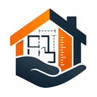
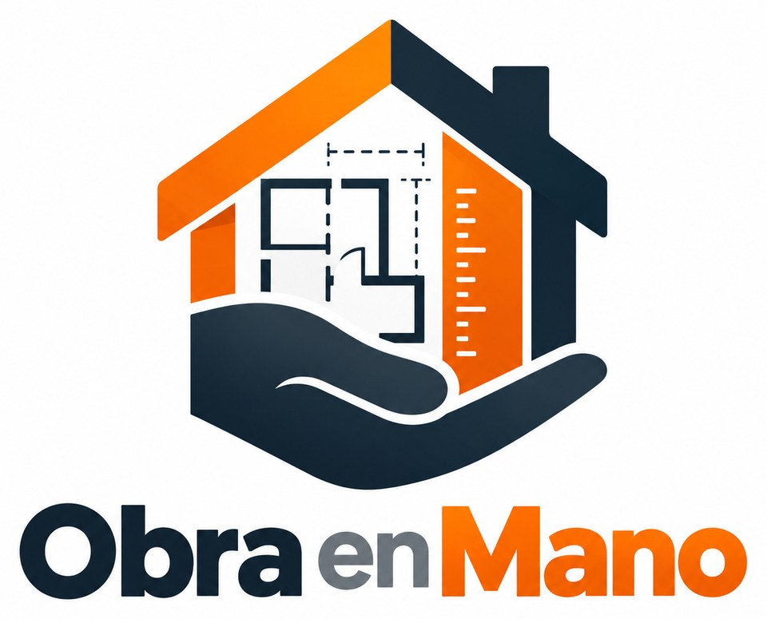
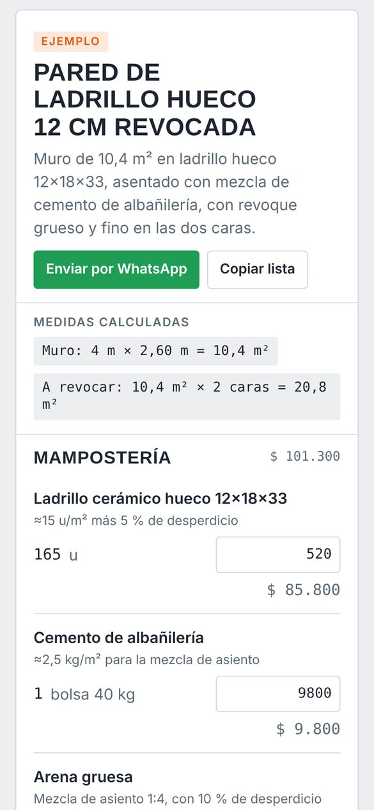
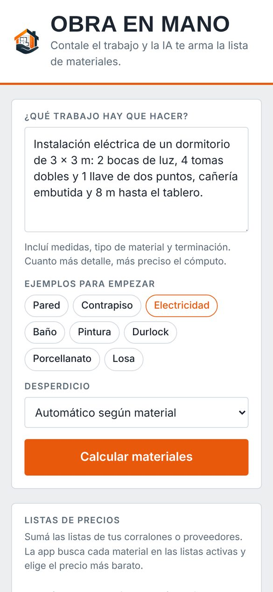
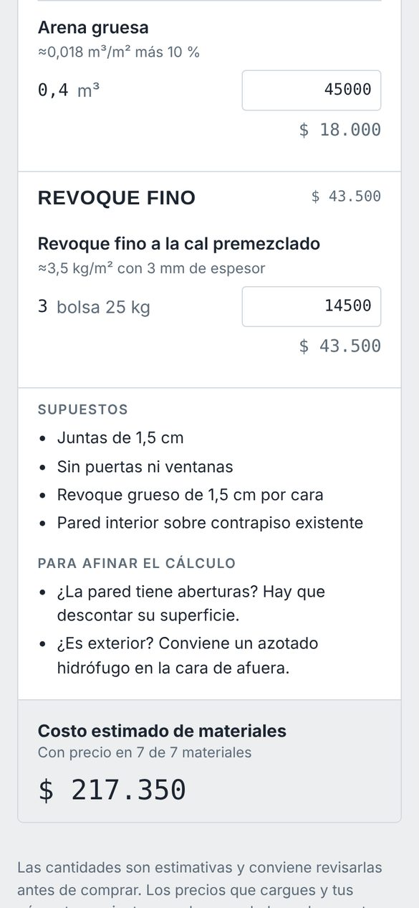

Obra en ManoProbala gratis
Escribí el trabajo con tus palabras y la inteligencia artificial te arma la lista de materiales con cantidades, el costo estimado y el proveedor más barato.

Calcular los materiales de un trabajo lleva tiempo y es fácil equivocarse.
Obra en Mano es una app que calcula los materiales de un trabajo a partir de una descripción en palabras: escribís qué hay que hacer y la app te da la lista de materiales con cantidades, el costo estimado y el proveedor más barato. Para obra, electricidad, plomería, pintura, durlock y más.
Capturas reales de la app.


Escribís el trabajo como lo dirías y la app arma la lista de materiales con cantidades.
Mampostería, revoques, electricidad, sanitarios, pintura y lo que corresponda, cada material con su unidad.
Junto a cada material se ve cómo se calculó: rendimiento por m², mezcla y desperdicio.
Automático según el material, o un 5, 10 o 15 %, o sin desperdicio.
La app avisa qué supuso y qué datos faltan para afinar el cálculo.
Agregás un dato ("la pared tiene una ventana de 1,20 x 1,10") y la app recalcula.
Pared, contrapiso, instalación eléctrica, baño, pintura, durlock, porcellanato y losa, listos para probar.
Cargás las listas de tus corralones en Excel, CSV o PDF, desde un link o pegando el texto.
Para cada material la app busca en las listas activas y elige el precio más bajo. También podés elegir otro producto o poner el precio a mano.
Cuánto saldría comprar todo en cada proveedor y cuánto combinando lo más barato de cada uno.
El total de materiales, para presupuestar antes de comprar.
La lista sale lista para mandar por WhatsApp o pegar donde quieras.
Los últimos cálculos quedan guardados para volver a verlos.
Sí. Se abre desde el navegador y se instala con su ícono, sin pasar por la tienda de aplicaciones.
Sí, para calcular, porque el cálculo lo hace la inteligencia artificial en internet. Los cómputos recientes y tus precios quedan guardados en el equipo.
Son una estimación muy completa, con rendimientos y desperdicios de uso habitual. Igual conviene revisarlas antes de comprar, sobre todo en trabajos grandes.
Excel, CSV, PDF, un link a la lista del proveedor o texto pegado. La app busca cada material en todas las listas que tengas activas.
Sí. La versión para tu negocio o tu corralón lleva tu nombre, tu logo y tus colores.
No. Las listas de precios y tus cómputos quedan guardados solo en tu equipo.
Abrila desde el celular, dejá tu nombre y tu WhatsApp, y empezá a usarla. Si te sirve, la seguís usando con todos tus datos.